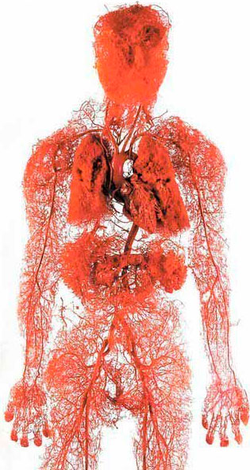

Отеки, боли и мышечные спазмы в ногах: 3 верных спутника закупоренных сосудов. Как лечить дома?
21:46,
У ВАС ОТЕКАЮТ НОГИ К КОНЦУ ДНЯ? ВАШИ ЛОДЫЖКИ ОПУХЛИ А ИКРЫ ОТЕКЛИ? ЭТО ТАК НАЗЫВАЕМЫЕ СОСУДИСТЫЕ ОТЕКИ, КОГДА
ЗАКУПОРЕННЫЕ КРОВЕНОСНЫЕ СОСУДЫ СО СЛАБЫМИ СТЕНКАМИ ПРОПУСКАЮТ ЖИДКОСТЬ В ОКРУЖАЮЩИЕ ТКАНИ. МЫШЕЧНЫЕ БОЛИ В
НОГАХ И СУДОРОГИ ИДУТ РУКА ОБ РУКУ С ОТЕЧНОСТЬЮ – И ВСЕ ЭТО РЕЗУЛЬТАТ НЕДОСТАТОЧНОГО КРОВОСНАБЖЕНИЯ.
Всем Известно, Что Кровяное Давление, Инсульт И Инфаркт Являются Результатом «Забитых» Холестерином Сосудов. Это
Сердечно-Сосудистые Заболевания, Но Мало Кто Осознает, Что Это Лишь Верхушка Айсберга. «Забитые» Сосуды Являются
Причиной 9 Из 10 Хронических Заболеваний, Считающихся Неизлечимыми.
Головная Боль, Скачки Артериального Давления. Суставы Беспокоят, Болят И Щелкают, Шея Не Вращается И Спина Не
Прогибается. К Вечеру Отекают Ноги, А Утром Отекает Лицо. Звон В Ушах. Пальцы Покалывают, А Конечности Холодеют.
Зрение Теряет Остроту. Память Ухудшается. У Тебя Ни На Что Не Хватает Сил. Многие Скажут, Что Это Старость. Но
Это Не Так.
Почему кровеносные сосуды ответственны за 90% вашего здоровья?
Что еще загрязняет сосуды, кроме холестерина?
4 явных признака проблем с сосудами и еще 7 скрытых
Как безопасно почистить сосуды в домашних условиях?
На эти вопросы ответил заведующий отделением сосудистой хирургии, профессор, практикующий нейрохирург
Клинической больницы в Варне, награжденный различными наградами, доктор Стефан Димитров.

Доктор Стефан Димитров провел более 11 000 операций на головном мозге. Его самому младшему пациенту было всего 2 дня от роду.
Доктор Димитров мастерски умеет простыми словами объяснить сложные медицинские процессы. Написал 45
научно-популярных книг и учебников для лиц без медицинского образования. Он абсолютно убежден, что наши
кровеносные сосуды ответственны за 90% здоровья нашего организма, и от их чистоты и проходимости зависит наше
самочувствие.
Почему кровеносные сосуды представляют собой 90% здоровья?
- Доктор Димитров, вы утверждаете, что здоровье организма на 90% зависит от сосудов? Почему?
- Какой самый большой орган в теле человека? Мало кто знает. Даже студенты-медики часто
ошибаются. Наиболее распространены головной мозг и печень. Более образованные говорят, что это кожа. Но на самом
деле самый большой орган – это наша сердечно-сосудистая система.
2.5
кругосветки можно сделать с сосудами 1 человека

кругосветки можно сделать с сосудами 1 человека
Представите. Если «взять» все сосуды человеческого тела и соединить их в непрерывную длинную нить, то длина этой
нити составит примерно 100 000 километров.
Чтобы было понятнее, длина экватора Земли составляет 40 000 километров. Получается, что
кровеносных сосудов только 1 человека достаточно для того, чтобы обогнуть планету 2,5 раза.
Что вы думаете о таком масштабе?
Сосуды — это не просто трубки, по которым течет кровь. Это сложный и взаимосвязанный орган, если ним будет
проблема, вы тут же заболеете.
Проблемы с сосудами ног - варикозное расширение вен, постоянные отеки и постоянная тяжесть в
ногах, замерзание или наоборот – нестерпимое жжение в ногах. Пяточные трещины. Плохая циркуляция крови - нет
защиты от бактерий, отсюда и появление грибков. Ногти становятся грубыми и утолщаются.
Сосуды, питающие печень, закупориваются -
стеатоз. Горечь во рту. Кушаешь немного жирной пищи - начинается отрыжка с горечью во рту.
Ослабляются и закупориваются сосуды в суставах -
сохнут хрящи. Суставы скрипят и болят, вы начинаете болеть остеохондрозом, появляются грыжи.
Сосуды прямой кишки потеряли тонус - геморроидальные узлы
расцветают шишками.
Сосуды глаз -
ухудшение зрения, пульсация в глазах, помутнение. Катаракта развивается. Покраснение глаз, которое часто
списывают на переутомление, на самом деле является микро кровоизлиянием — разрывом мельчайших капилляров в
глазу.
Нарушения кровообращения в головном мозге - головокружение,
шум в ушах и частая забывчивость. Вы когда-нибудь были на кухне, вышли куда-то и забыли зачем. Или известное
слово вертится у вас на языке, но вы не можете вспомнить. Все это признаки ухудшения состояния сосудов головного
мозга.
И, конечно же, королева сосудистых проблем Ее Величество гипертония. А гипертония — мать инсульта и сестра
сердечного приступа.
Кровеносные сосуды – наша система питания, по сосудам движется сама жизнь. Перекройте важный участок дороги и ваша
жизнь остановится.
«Забитые» сосуды обрекают все органы на голодную смерть.
Избыточный вес
тесно связан с кровеносными сосудами. Если сосуды забиты холестерином и в результате органы голодают, то
кровеносные сосуды не могут снабдить их необходимым количеством питательных веществ. Поэтому мозг посылает сигналы
- нужно есть. И человек ест. И все же органы не получают необходимых питательных веществ из-за непроходимости
сосудов. Мозг снова дает команду - надо есть. И так по замкнутому кругу.
Отсюда постоянное желание что-то жевать, тяга к сладкому и жирному – организм требует калорий.
Когда мои коллеги говорят своим пациентам: «У вас гипертония, потому что у вас избыточный вес», они путают причину
и следствие. Гипертония не возникает из-за избыточного веса. А избыточный вес присутствует, потому что вы
страдаете гипертонией.
Можно продолжить известную поговорку "Без здоровья счастье невозможно" - "А здоровье невозможно без чистых
сосудов"
Так что не устану повторять: если хочешь жить полной жизнью, чисти и восстанавливай
сосуды. Чистые сосуды — это способ избавиться от 90% хронических заболеваний, некоторые из
которых считаются «неизлечимыми».
Что еще загрязняет сосуды, кроме холестерина
«Все знают, что холестерин опасен». Именно он закупоривает наши сосуды, сужает просвет и нарушает кровообращение.
Есть ли другой виновник?
6.2 кг
- общая масса загрязнений, которые накапливаются в сосудах до 50-летнего возраста.
Холестерин
"Да, ты прав." Холестериновые бляшки, или «атеросклеротические бляшки», составляют примерно 65-70% загрязнения
кровеносных сосудов.
К 50 годам в сосудах человека накапливается около 5 кг холестериновых бляшкек. Отложения
холестерина сужают просвет сосудов в 4-5 раз.
Представьте себе следующее, если нормальный просвет
кровеносного сосуда шириной примерно в пол пальца, то 5 кг. холестериновые бляшки уменьшают просвет до размеров
2 спичек..
Холестериновые бляшки сами по себе не опасны для жизни. Да, снижается качество жизни,
нарастают артериальное давление, головные и суставные боли, слабость и апатия. Но гораздо опаснее масса тромбов,
которая тоже скапливается в наших сосудах.
Масса тромбов
Тромб накапливает значительно меньшую массу: «всего» около 800 г — 1 кг.
Однако их опасность в том, что они неустойчивы. Сгусток крови может в любой момент оторваться и
закупорить сосуды.
Если сгусток достаточно большой, то он намертво «забивает» кровеносный сосуд. Вы
получаете ишемию – полное прекращение кровоснабжения органа, который питается этим сосудом.
Ишемический инсульт – закупорка кровеносного сосуда в головном мозге. Инфаркт -
закупорка сердечной артерии. Ишемия печени, коллапс легкого, почечная недостаточность. Геморрой есть не что иное,
как ишемия сосудов прямой кишки. Закупорка даже мелких сосудов на ногах со временем приводит к некрозу –
гангрене.
Оксид кальция
Оксид кальция в сосудах – это остаток химических препаратов и пищевых добавок. К 50
годам накапливается около 300-400 граммов. Больше всего накапливается в сосудах головного
мозга.
Опасность в том, что оксид имеет острую, кристаллическую структуру. В случае резкого
сужения - спазма сосуда, вызванного стрессом или физической нагрузкой, или атмосферными условиями, острый кристалл
может проткнуть сосуд и вызвать его разрушение. А разрыв мозгового сосуда приводит к геморрагическому
инсульту.
4 явных признака проблем с сосудами и еще 7 скрытых
- Какие симптомы того, что наши сосуды забиты «шлаком»? Откуда мы знаем, что
наше тело кричит: «Прочисти сосуды немедленно!»?
- Честно говоря, если вам больше 45 лет и вы никогда не принимали пищевые препараты
для очистки сосудов, гарантирую, что у вас проблемы с сосудами.
45 лет
это переломный момент, после которого необходимо чистить сосуды
Закупорка сосудов холестерином, тромбами, кальцификация – это по сути естественный процесс старения. Конечно,
современная еда, наркотики, курение и алкоголь ускоряют процесс «засорения» в 5-8 раз. Но все мы люди и никуда не
деться, мы все равно живем в таком мире.
Основной признак загрязнения сосудов
Если у вас диагноз гипертония, то вы можете даже не слушать. Гипертония — королева плохих сосудов.
Вы страдаете от высокого кровяного давления? Ваше кровяное давление постоянно повышается, и вам нужно принимать
лекарства? Не дай бог, в ваших сосудах осталось 30% просвета. Остальное плотно покрыто холестериновыми бляшками,
сгустками крови – тромбозами и отложениями кальция.
Поэтому даже малейший стресс, перемены погоды, магнитная буря моментально сказываются на самочувствии человека.
Повышается давление, начинает пульсировать голова, начинают болеть суставы.
Четыре заболевания, вызванные проблемами в кровеносных сосудах:
-
1. ГипертонияНестабильное или стойкое высокое кровяное давление, требующее медикаментозного лечения. Главный и самый важный показатель. Вам поставили диагноз гипертония? Это кровеносные сосуды, которые кричат: «Очисти нас!»
-
2. Варикозное расширение венНекрасиво вздувшиеся вены на ногах, тяжесть и боль, отечность. Холестерин и сгустки крови закупоривают венозные клапаны. Постепенно появляются «звездчатые капилляры», которые затем становятся «сеткой». А сеть уже перерастает в полноценный варикоз.
-
3. ГеморройКогда сосуды в прямой кишке, по которым проходит кровь, закупориваются, геморроидальные узлы набухают. Если первыми закупориваются кровеносные сосуды, возникают анальные трещины.
-
4. ОстеохондрозЭто недостаток кровообращения в хрящах. Хрящ затвердевает и начинает изнашиваться, не оставляя времени на восстановление. Они не восстанавливаются и засыхают. Они теряют способность к легкой амортизации и восстановлению. Соли не вымываются и начинают бесконтрольно расти и приводят к необратимым повреждениям.
7 наводящих на размышления симптомов
-
1. ОтекЗагрязненные емкости не успевают перекачивать жидкость. Нарушается водно-солевой обмен. К концу дня ноги настолько опухают, что носки начинают пережимать щиколотки, оставляя следы на коже. Опухшее лицо и мешки под глазами. Пальцы, с которых невозможно снять свои кольца. Вздутие живота указывает на отек внутренних органов.
-
2. Звон в ушахОт слабого поскрипывания до громкого звона, мешающего сосредоточиться. Это связано с повышенным напряжением сосудов головного мозга, которые давят на барабанную перепонку.
-
3. ГоловокружениеОщущение «головокружения» в голове, внезапные приступы головокружения свидетельствуют о том, что ваш вестибулярный аппарат «голодает». Часто страдает и слух.
-
4. БессонницаВы чувствуете сонливость и усталость, ложитесь спать и не можете уснуть до утра? Это связано с недостаточным кровоснабжением гипофиза. Он перестает вырабатывать мелатонин, гормон сна.
-
5. УсталостьУ тебя совсем нет сил. Вы не хотите ничего делать. Вы просто хотите поесть и лечь. Это ощущение возникает из-за того, что организм переходит в режим энергосбережения. Через зараженные сосуды органы не получают полноценного питания и, чтобы не погибнуть, ваш организм стремится минимизировать активность.
-
6. Зрительные аномалииМушки перед глазами, пульсация, нечеткость зрения. Это симптомы нарушения кровообращения в глазах.
-
7. Боль в суставахКогда погода плохая, вы испытываете боль в суставах. Проснувшись утром, вы чувствуете себя не бодрым и отдохнувшим, а одеревеневшим и полупарализованным. Требуется некоторое время, чтобы привести в тонус суставы, которые не могут двигаться после сна. Это означает, что синовиальная жидкость теряет свои свойства и прилипает к суставам.
Есть ли у вас какие-либо из этих симптомов? Кровеносные сосуды отчаянно встревожены тем, что хотят очиститься и напитаться.
Чаще всего у людей наблюдается сразу несколько симптомов в разных сочетаниях. А иногда все сразу.
Люди стараются лечить каждое заболевание индивидуально. Таблетки от повышенного давления, мази от варикоза, свечи от геморроя, гели от остеохондроза. Ну и конечно обезболивающие, обезболивающие, обезболивающие...
Они просто тратят много денег в аптеках. Потому что причина всех болезней одна – закупорка сосудов. И начинать необходимо с генеральной очистки сосудов.
Как очистить сосуды от холестерина, тромбов и кальцификации?
- Давайте дадим конкретный медицинский совет, например, взять женщину, которую зовут, скажем, Василка из Врацы. 57 лет, замужем, имеет лишний вес, страдает гипертонией и варикозным расширением вен. На погоду реагирует с точностью барометра – болят суставы, чувствуется усталость и сонливость, болит голова.
- Как помочь Васильке? Как очистить сосуды, не ходить по всем врачам, просто слушать морали типа «Надо похудеть», «Надо начать заниматься спортом», «Нужно правильно питаться», «Это все от возраста» и другие подобные вещи?
Большинство лекарств не лечат и не помогают, а калечат и вызывают зависимость
- Да, медицина в наших регионах, к сожалению, хромает на обе ноги. Поэтому я прекрасно понимаю нежелание обращаться к врачам. Но Василька и сама справится.
Для безопасной очистки сосудов могу отметить только один препарат с безупречной репутацией – нутрицевтик Cardiofort. Cardiofort продлевает жизнь на 11-17 лет, наполняя ее энергией и легкостью, а не страданий и потери жизненных сил.
Безопасен, как травяной чай. А по эффективности
уступает только
хирургической очистке сосудов стентом. Но в отличие от операции, он не имеет осложнений или побочных эффектов. Курс очищает все сосуды организма. От крупных толстых артерий до мельчайших тонких капилляров.
Cardiofort представляет собой смесь растительных экстрактов в виде капель, пробуждающую живые молекулы при контакте с водой. Эти нежные очищающие экстракты вымывают из сосудов холестериновую слизь, прилипшие к стенкам сгустки крови – тромбоз, кальциевый налет – остатки лекарств. Все, что мешает свободному току крови.
Накопившиеся годами шлаки, отравляющие вашу жизнь, вымываются Cardiofort за 1,5-2 месяца регулярного приема.
За 1,5 месяца Cardiofort растворяет и удаляет 4 кг холестериновых бляшек. Разжижает 900 г - 1 кг тромботических масс и смывает 350-400 г отложений кальция.
Вместе с ними исчезает головная боль, рассеивается шум в ушах. Мозг, получая правильное питание через чистые сосуды, работает со скоростью суперкомпьютера. Мысли ясны и точны.
Чувства просыпаются, чтобы услышать приятные звуки, которых вы раньше не замечали. Улучшается слух, можно даже услышать тихий разговор в соседней комнате.
Запахи приобретают новый вид. Больше без заложенного носа, хронических простуд и аллергии. Бронхи расширяются. Дыхание ровное и свободное. Свежий воздух, наполняющий легкие, приятными волнами распространяется по всему телу, вызывая чувство легкой эйфории.
Вкусы становятся яркими и насыщенными. Обычная еда доставляет необыкновенное удовольствие. Ешьте меньше, но больше насыщаетесь. Исчезает постоянная тяга к сладкому и выпечке.
Суставы поют «спасибо», потому что больше не болит. Хруст полностью исчезает, на его место приходят плавные движения, благодаря возобновлению смазки суставов. Как будто в двигатель залили новое масло и заменили черную грязную жидкость, полную металлической стружки, новым прозрачным маслом, обеспечивающим идеальную смазку.
- Впечатляющий. Честно говоря, я впервые слышу о
Cardiofort.
Я вообще слышал о нутрицевтиках. В Японии и Израиле они законодательно установили статус нутрицевтиков в качестве предпочтительного лечения. А в Болгарии к ним до сих пор относятся с недоверием.
- Наша Василька перепробовала, наверное, сотни разных добавок и таблеток, дала себе обещание не тратить деньги на сомнительные чудеса.
Наши сомнения — предатели, они заставляют нас терять многое из того, чего мы могли бы достичь, из-за боязни попытаться это сделать.
«Позвольте мне рассказать вам поучительную историю о недоверии».
В 1928 году был изобретен первый антибиотик пенициллин.
Он легко лечил дизентерию и брюшной тиф, от которых в то время неизбежно умирали люди.
Но большинство людей не верило, что это может помочь, так как они уже 1000 раз безуспешно пытались вылечиться. Вылечились те, кто попытался 1000 раз и не побоялся попробовать 1001 раз. А сдавшиеся кидались словами "Еще чудо-средство, которое не поможет" умирали, хотя спасение было прямо перед их носом.
Как и прежде, пенициллин побеждал распространенные в то время болезни: дизентерию, брюшной тиф и легочную чуму. Так что со временем Cardiofort
устранит сосудистые заболевания.
Первые шаги уже сделаны — Япония, Канада, Корея, Швейцария и Израиль — приняли законы об очищении сосудов нутрицевтиками, а не медикаментозной терапией.
В Болгарии Cardiofort
фициально прописывают в одном месте - в частном медицинском центре столицы. Где только очень обеспеченные люди могут позволить себе лечиться. Там лечат по израильским протоколам, а не по нашим клиническим схемам. Поэтому пациенты наслаждаются результатами, а не бесконечным процессом выздоровления.
Наши врачи предлагают остальным гражданам лечиться химическими препаратами, которые производятся на заводах, принадлежащих этим представителям элиты.
— Я тоже считаю, что сомнения — наш злейший враг, поэтому не боюсь пробовать новое.
При насыщении влагой и кислородом целебные экстракты приобретают эффект перекиси водорода - оксигенации.
Молекулы Cardiofort
— это маленькие кислородные бомбочки. Они разрушают отложения холестерина в кровеносных сосудах и облегчают прохождение крови.
Эффект оксигенации заключается в ускорении всасывания лечебных молекул за счет их обогащения кислородом.
Вот почему Cardiofort так эффективен — вы пьете активные живые экстракты, В то время как медицинские препараты дают вам только пассивные стерилизованные молекулярные скелеты.
Действие перекиси обеспечивает немедленное поглощение живых молекул. Экстракты, обогащенные кислородом, легко всасываются стенками пищевода. Поэтому Cardiofort не вызывает изжоги, горечи во рту, отрыжки, не раздражает кишечник и защищает желудок. Cardiofort смело пьют даже люди, страдающие язвой.
Устраняет «разрушения»
Рапсовое масло помогает устранить повреждения. Молекулы рапса удаляют частицы холестерина, прилипшие к стенкам сосудов. Проход для свободного тока крови освобождается. Органы наконец-то начинают «питаться». Хрящ оживает, насыщается влагой и кислородом, активизируется механизм самовосстановления. Восстанавливается эластичность. Скрип и щелканье в шее, спине и суставах исчезают. Когда погода изменится, вы больше не будете испытывать боли в коленях и пальцах.
Cardiofort – это кладезь редких целебных экстрактов, которые гармонично работают для чистоты и силы сосудов.
Отеки исчезают. Даже проведя весь день на ногах - они не отекают.
Кровоснабжение кожи восстанавливается – сосудистая сеть и звездочки исчезают. Постепенно уменьшаются варикозные вены, подсыхают геморроидальные узлы.
Заряжает энергией
Молекулы Кумквата вступают в игру. Они улавливают «оторвавшиеся» частицы холестерина и при слиянии с ними превращаются в полезные липопротеины высокой плотности, участвующие в расщеплении жиров.
Cardiofort одним ударом убивает двух зайцев – выводит холестерин из сосудов и стимулирует правильное сжигание жира. Поэтому чувствуешь мощный прилив сил, хочется двигаться, глаза загораются, появляется ощущение и желание покорять горы.
Снимает спазмы
Экстракт хмеля снимает сосудистые спазмы. Это "валериана" для сосудов. Успокаивает и расслабляет кровеносные сосуды, суженные из-за отсутствия кровотока. Артериальное давление возвращается к норме плавно и безопасно. Проходит головная боль, стихает шум в ушах, легкие и бронхи работают ровно и легко. Нет больше чувства одышки.
Разгружает сердце
Экстракт пустырника сердечного растворяет тромбы, тромбозы и даже мелкие аневризмы. Вымывает отложения кальция в сосудах, образовавшиеся после приема химических препаратов.
Сердце начинает работать с легкостью. Сердцебиение становится медленным и размеренным. Вас больше не будут беспокоить аритмия и тахикардия. Внезапное покалывание в груди, вызванное перегрузкой сердца, не повторяется, вы забудете о нем навсегда.
Риск сердечного приступа падает до нуля.
Восстанавливает сосуды
Листья и цветы облепихи
в это время латает стенки сосудов. Микроповреждения, места вероятного разрыва сосудов, заклеиваются молекулами облепихи как наклейкой. Мозг хорошо защищен от инсульта. Его клетки получают питание и кислород, у него приятное ощущение легкой и свежей головы.
Эффект бабочки
Cardiofort
похож на крыло бабочки, которое запускает цепную реакцию захватывающих дух изменений. Начав шаг за шагом очищать сосуды от накопившейся десятилетиями грязи,
Cardiofort запускает цепную реакцию по восстановлению организма.
1 месяц приема Cardiofort - это как второе рождение
Легко проснуться
Вы просыпаетесь утром и легко встаете с постели - не нужно заставлять себя вставать, потягивая и растирая затекшие ноги, со скрипами в спине и шее.
Утром тело наполняется энергией и силами, ведь сосуды совершенно чистые, а ночью все органы получили полноценное питание и отдых. Ни одна часть тела не голодала от недостатка кровоснабжения, набираясь сил для нового дня.
Вкусный завтрак
На завтрак вы съедаете бутерброд с толстым слоем масла и розовым хрустящим беконом — и печень и желудок легко их усваивают. Нет горькой отрыжки, болей в животе. Cardiofort почистил сосуды, питающие желудок, теперь он может поглотить даже гвоздь.
Героическая сила
Когда вы выходите из дома, вам больше не нужно беспокоиться о своих ногах – вы не воспринимаете ходьбу как бремя, можете ходить хоть целый день, а ноги не устают и не отекают. Босоножки, туфли, носки не врезаются в опухшие ноги, как веревка в салями.
Абсолютно спокойный
Вы абсолютно спокойны и расслаблены. Вы больше не испытываете постоянную боль, которая поглощает ваш разум, мешая вам сосредоточиться на чем-то еще. Когда ничего не болит, привычные вещи, звуки, запахи играют новыми, давно забытыми красками.
Завидная энергия
Даже после тяжелого рабочего дня вы идете домой с ясным и бодрым чувством в голове. Мозг работает как швейцарские часы, усталости совсем не чувствуешь.
Хороший сон
Итак, лежа в постели, вы быстро засыпаете. А раньше вы крутились в постели посреди ночи и не могли заснуть. Теперь все просто — вы говорите, когда заснуть, и тело послушно слушается вашей команды.
Дисконтная программа
- Cardiofort,
насколько известно, исчез из большинства аптек? Почему?
- К сожалению, да. С начала этого года Cardiofort больше не продается в аптеках.
Конфликт был вызван жадностью аптечных сетей, которые потребовали от производителя Cardiofort 38 евро
за каждую проданную единицу! Подняв цену производителя и сделав огромную наценку (цена одного курса Cardiofort в некоторых аптеках достигала 180 евро), фармацевты попросили ввести дополнительную плату от производителя.
Владельцы аптек утверждали, что эта дополнительная оплата поможет им выжить. Ведь после очистки сосудов Cardiofort человек перестает нуждаться в лекарствах, которые все это время принимал! Люди откажутся от лекарств от повышенного давления и перестанут покупать лекарства от боли в суставах. Это значительно сократит потребление лекарств от астмы и диабета. А это приведет к убыткам для аптек. Поэтому требуют определить максимально возможную цену
Cardiofort.
В результате производитель Cardiofort разорвал все договоры со всеми аптеками и перешел только на онлайн-продажи. В принципе, это правильно. Судите сами: вам не нужно платить за аренду в торговых местах, не нужно подкупать аптеки, чтобы они продавали там ваше лекарство. Поэтому Cardiofort сейчас намного доступнее, чем когда он продавался в аптеках.
Акция от производителя Cardiofort для жителей Португалии "Чистые сосуды"

Наш институт совместно с производителем Cardiofort, в рамках проекта телемедицины (интернет-медицина) запустили кампанию по продукту.
Любой желающий может подать заявку и получить Cardiofort
по новой сниженной цене
39 евро!
- Что мне делать, чтобы получить товар со скидкой?
- Чтобы заказать Cardiofort в рамках акции, необходимо выполнить следующие условия:
Условия получения Cardiofort:
-
Заказать «Cardiofort» для личного пользованияЗаказчик и Получатель должны совпадать. Это необходимо для борьбы с дистрибьюторами, которые пытаются массово закупать Cardiofort и перепродавать его с дополнительной наценкой.
-
Заполнить заявку через официальную форму программы
Официальная форма заявки – гарантия цены производителя и защита от дистрибьюторов
- Как долго будет действовать льготная программа?
«Пока не закончится выпущенная партия Cardiofort». Но препарат полностью раскупается за 3-4 недели. И это при том, что рекламы на телевидении и радио нет. Люди передают информацию друг другу, рекомендуют друзьям и близким. Даже мы были удивлены, что информация о Cardiofort распространяется так быстро. Последний день льготных скидок на Cardiofort - , включительно.
Поэтому я рекомендую вам оставить заявку на Cardiofort
как можно скорее. Повторной программы в этом году точно не будет.
Акция действует до , включительно, но акции осталось:
21 шт

Официальная форма заявки
№29 982 от 30 000 от
Получить Cardiofort льготной цене
39€78€
39€
Чтобы получить „Cardiofort“ о скидкой 50%, введите свое имя и контактный телефон в поля ниже и нажмите на кнопку "ЗАКАЗАТЬ"
*Ваши данные отправляются напрямую производителю. Никто, кроме него, не имеет к ним доступа.